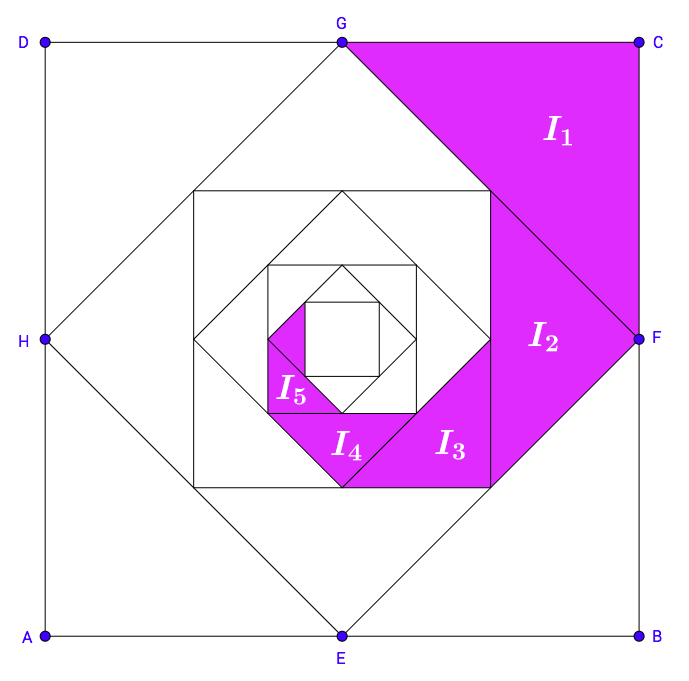

Teaching
Current Courses
- Math 460: Probability and Statistics
- Math 150: Quantitative Literacy II
- Math 131: Intermediate Algebra for STEM
Recent Courses
Spring 2018, Pitzer College: Fall 2017, Pitzer College:Teaching Philosophy
If you are interested in reading about my views on teaching and would like some insight into what I am like in my classroom as an educator, have a look at my teaching philosophy.Conference Work
At Sarah Lawrence College, each course has two components: weekly class seminar (usually two 85 minute sessions per week) and bi-weekly individual student meetings with their professors called "conference work."Conference work can vary from independent studies in mathematical subjects to term papers on anything the student finds interesting (of course, my only requirement is that it must have a mathematical component in some way). See what my students have done in the past:

Liberal Arts Mathematics
At Sarah Lawrence College, I proposed and developed a course titled “What are Numbers? A Narrative of 30,000 Years and Counting…” that reflects my desire for an interdisciplinary liberal arts course mixing mathematics, history, and literature.- Math 3135: What are Numbers? A Narrative of 30,000 Years and Counting... (SLC, Spring 2017)
Complex Analysis
At Sarah Lawrence College, I taught an advanced course on Complex Analysis titled "Mathematics with Complex Variables: A Visual Approach." This course not only introduced students to proofs and rigorous mathematical thinking and writing, but also emphasized the visual and geometric aspects of this beautiful subject. Though the prerequisite was only Calc II, I developed the necessary concepts from Calc III slowly and covered the standard topics ending with the residue theory.- Math 3614: Mathematics with Complex Variables: A Visual Approach (SLC, Fall 2016)
Analysis
In the Summer of 2012, I created the Graduate Student Summer School and taught a mini-course in Geometric Measure Theory (GMT for short). The goal was to give an introduction to some of the more important parts of GMT in four lectures intelligbile to grad students who have passed their quals in Real Analysis (and preferably Differential Geometry). I also taught a weeklong Boot Camp in Real Analysis to prepare students for the Qualifying Exam. In my first year as a student at the Graduate Center, I was invited to teach a problem solving session to accompany the Real Analysis course.- Problem Solving in Real Analysis I (Fall 2009)
- Problem Solving in Real Analysis II (Spring 2010)
Flavors of Calculus
I have taught many Calculus courses through the years emphasizing different flavors while serving different departments and students needs. At Sarah Lawrence College, the class is taught in a seminar format with a small group of students (capped at 15). I've structured the course as follows: They read a section or two from the textbook, write a reflection piece summarizing the readings with one question that isn't answered in the textbook (due online via googledocs), and answer between 5 to 10 straightforward problems online using the WebAssign software — all before class! This is a springboard for class discussion where we discuss the material at a deeper level, work out any tricky problems, and think about why many of the theorems are true. Additionally, I bring my laptop to class to do various Geogebra, Desmos, and Sage demonstrations to provide an even more dynamic learning environment.
- Math 3010: Calculus II: Further Study of Motion and Change (SLC, Spring 2017)
- Math 3010: Calculus I: The Study of Motion and Change (SLC, Fall 2016) {Two Sections!}
- Math 3010: Calculus I: The Study of Motion and Change (SLC, Spring 2016)
- Math 3010: Calculus II: Further Study of Motion and Change (SLC, Fall 2015)
At the highest level, there is Math 2610, which is the traditional Calculus I course with proofs. I use the term proofs in the sense that Thomas Tucks uses "proof II," which focuses more on the ideas rather than robotic ε—δ manipulation. For example, I love the proof of \({d \over dx}[\ln(x)]= {1 \over x}\) using implicit differentiation plus the beautiful rule \({d \over dx}[e^{x}]= e^{x}\), as well as the proofs of the Fundamental Theorem of Calculus.
- Math 2610: Calculus I (Baruch, Summer 2016)
- Math 2610: Calculus I (Baruch, Summer 2015)
- Math 2610: Calculus I (Baruch, Fall 2014)

At the intermediate level, there is Math 2207, which is a Business Calculus course with a chapter on Matrix Algebra. This is a difficult course, both to teach and for the students, as it has a crammed syllabus and the majority of the students are transfers with much weaker mathematics preparation. I like to begin the course with Matrix Algebra, which includes Gauss-Jordan elimination and analyzing systems of equations (both consisten and inconsistent). After that, I begin with a brief pre-Calc review including exponential and logarithms (base \(e\)) so I may use these functions for examples and problems throughout the entire semester. I find it also gives weaker students more time to feel comfortable with these transcendental functions that are so important for applications. I should note that this class does not include trigonometric functions.
- Math 2207: Applied Calculus & Matrix Algebra (Baruch, Summer 2015)
- Math 2207: Applied Calculus & Matrix Algebra (Baruch, Summer 2016)
Math 2003 is a combination of Pre-Calculus, Business Calculus and Matrix Algebra. Roughly one fourth of the course is Matrix Algebra, one fourth is Pre-Calculus (functions, lines, parabolas, circles, and applications (e.g. break-even analysis)), and the other half is devoted to a slow and gentle introduction to Business Calculus I, ending with implicit differentiation and related rates. This class also does not include trigonometric functions.
- Math 2003: Precalculus, Elements of Calculus, and Matrix Algebra (Baruch, Spring 2015)
- Math 2003: Precalculus, Elements of Calculus, and Matrix Algebra (Baruch, Summer 2014)
- Math 2003: Precalculus, Elements of Calculus, and Matrix Algebra (Baruch, Fall 2011)
- Math 2003: Precalculus, Elements of Calculus, and Matrix Algebra (Baruch, Spring 2011)
- Math 2003: Precalculus, Elements of Calculus, and Matrix Algebra (Baruch, Fall 2010)

Math 2205 is a continuation of Math 2003 which finishes the Calculus I sequence. It begins with a chapter on extrema and curve sketching, then a chapter on exponential and (natural) logarithimic function including the algebraic material and lots of applications. The course ends with a chapter on anti-differentiation and integration, including \(\Sigma\)-notation, Riemann sums, and applications like consumer & producer surplus.
- Math 2205: Applied Calculus II (Baruch, Spring 2015)
College Algebra
I taught many sections of College Algebra at Baruch College preparing students for further coursework in mathematics (namely, these students go on to take Math 2003) and/or other science courses. I like teaching this course since you can really make a difference towards their success in Business Calculus. I find that I need to spend a significant amount of effort teaching my students: how to study, how to make review sheets, how to learn from their mistakes, and how to show all the steps in their solutions. Of course, students need a lot of motivation to convince them that writing their work by hand is important and to not have an over reliance on technology (though we spend a significant amount of time on using the Ti89 calculator).- Math 1030: College Algebra (Baruch, Summer 2014)
- Math 1030: College Algebra (Baruch, Spring 2013)
- Math 1030: College Algebra (Baruch, Fall 2012)
- Math 1030: College Algebra (Baruch, Spring 2012)
- Math 1030: College Algebra (Baruch, Fall 2011)
Early Math
I taught at NYC College of Technology for a year, were I taught two math courses on fundamental topics needed in preparation for College Algebra.
Math 1180, called Concepts in Mathematics, is best described by its four main topics covered: basic algebra, elementary geometry, functions and inequalities, and probability and statistics. This was a fun class to teach, especially the statistics module since this lead to many lively discussion and examples which the class was eager to supply.
- Math 1180: Concepts in Mathematics (Spring 2014)
- Math 1175: Fundamentals in Mathematics (Fall 2013)